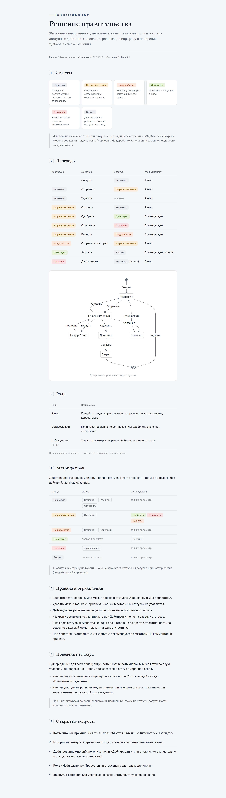

R7. Воркфлоу статусов решения — модель жизненного цикла
Полный набор статусов, переходов, ролей и матрица прав
🔴 Высокий приоритетСпецификация: макет decision-workflow.html; увязать с R1, R2, R6
Документ для согласования · Версия 1.0 · 20.06.2026 · Тестовая среда https://fkftest.okmot.kg/
Содержание
Назначение задачи
Как сейчас (проблема)
Что предлагаем
Правила и поведение
Как это увидит пользователь
Критерии приёмки
Открытые вопросы
1. Назначение задачи
Решение правительства проходит жизненный цикл — от черновика до закрытия.
Чтобы согласование было прозрачным и защищённым, нужна формальная модель:
статусы, переходы, роли и матрица прав. Эта задача описывает целевую
модель и увязывает её с уже принятыми задачами R1 (вложение файла), R2 (аудит)
и R6 (карточка и история).
2. Как сейчас (проблема)
Факт. В системе сейчас всего 3 статуса — «На рассмотрении»,
«Одобрен», «Закрыт». Полный жизненный цикл не формализован: нет
«Черновика», «На доработке», нет «Отклонён» как отдельного от «Закрыт»; роли и
матрица прав в UI не определены. Связано с дефектом P1-12 — записи
«На рассмотрении» не видны в списке по умолчанию, что блокирует шаг одобрения.
3. Что предлагаем
Формализовать модель жизненного цикла по спецификации-макету
mockups/decision-workflow.html
(статусы, переходы, роли, матрица прав, поведение тулбара) — передать команде
разработки как единый источник истины.
4. Правила и поведение
Статусы (6)
Черновик → На рассмотрении → На доработке → Действует → Отклонён → Закрыт.
Переходы (10)
Переход
Описание
Создать
Создаётся новая запись в статусе «Черновик».
Отправить
Из «Черновик» → «На рассмотрении» (на рассмотрение).
Отозвать
Автор возвращает запись из «На рассмотрении» в «Черновик».
Одобрить
Из «На рассмотрении» → «Действует».
Отклонить
Из «На рассмотрении» → «Отклонён».
Вернуть
Из «На рассмотрении» → «На доработке».
Отправить повторно
Из «На доработке» → «На рассмотрении».
Закрыть
Из «Действует» → «Закрыт».
Удалить
Удаление записи (только из «Черновик»).
Дублировать
Создать новый «Черновик» на основе существующей записи.
Роли
Автор — создаёт, заполняет, отправляет, отзывает.
Согласующий — одобряет, отклоняет, возвращает на доработку.
Наблюдатель (опционально) — только просмотр.
Матрица прав
Права определяются как роль × статус. Поведение тулбара:
Механизм
Правило
Скрывать по роли
Кнопки действий, недоступные роли, не показываются.
Гасить по статусу
Кнопки, неприменимые в текущем статусе, неактивны (с подсказкой почему).
Правила переходов
Редактирование возможно только в статусах «Черновик» и «На доработке».
Удаление возможно только из «Черновик».
Статус «Действует» можно только закрыть.
Статус «Закрыт» достижим только из «Действует».
Расхождения, которые надо снять при реализации
Внимание. Модель пересекается с задачами R1, R2 и R6. Перед реализацией
необходимо снять следующие расхождения и согласовать терминологию.
Терминология: «Одобрен» → «Действует» — синхронизировать с R1
(обязательность файла теперь на переходе в «Действует»).
Обратимость: выбрать одну модель — R2 предлагал возврат из «Закрыт» в
«На рассмотрении» (админ); спецификация делает «Закрыт»/«Отклонён»
терминальными, а обратимость — через «Дублировать» отклонённое в новый черновик.
Именование: статус «Действует» vs булев флаг «Действующее решение
(Да/Нет)» из карточки — решить, заменяет ли статус флаг или это разные сущности
(согласовать с R6).
Журнал переходов (кто/когда/комментарий) — это тот же аудит, что в R2,
и таймлайн «История» в R6; не дублировать, сделать единый журнал.
5. Как это увидит пользователь
1Автор создаёт черновик
Автор создаёт запись в статусе «Черновик»,
заполняет реквизиты и нажимает «Отправить» → запись переходит в
«На рассмотрении».
2Согласующий рассматривает
Согласующий (ДРУГОЙ пользователь) видит запись и
нажимает «Одобрить» (→ «Действует») либо «Отклонить» /
«Вернуть на доработку».
3Тулбар по контексту
Тулбар показывает только доступные роли действия;
неактивные кнопки — с подсказкой, почему они недоступны в текущем статусе.
4Терминальные статусы
Запись в статусе «Действует» можно только
«Закрыть»; отклонённую запись можно «Дублировать» в новый черновик.
Совет. Источник истины по переходам и матрице прав — самодостаточный
макет-спецификация mockups/decision-workflow.html. Реализация должна
точно соответствовать ему.

Спецификация модели: статусы, переходы, роли и матрица прав (макет mockups/decision-workflow.html).
6. Критерии приёмки
Реализованы 6 статусов и 10 переходов по макету.
Роли Автор/Согласующий разделены (самоподтверждение запрещено).
Матрица прав роль×статус соблюдается.
Тулбар скрывает кнопки по роли и гасит по статусу с подсказками.
Редактирование только в «Черновик»/«На доработке».
Удаление только из «Черновик».
«Действует» можно только закрыть; «Закрыт» достижим только из «Действует».
Единый журнал переходов (R2/R6) без дублирования.
Терминология «Действует» согласована с R1.
Записи «На рассмотрении» доступны для одобрения (снимает P1-12).
7. Открытые вопросы
Из спецификации, требуют решения заказчика:
Обязательность комментария-причины при «Отклонить»/«Вернуть»?
Нужна ли роль «Наблюдатель»?
Нужно ли «Дублировать»?
Кто уполномочен закрывать решение?
Финальная модель обратимости: R2 админ-возврат vs «Дублировать»?